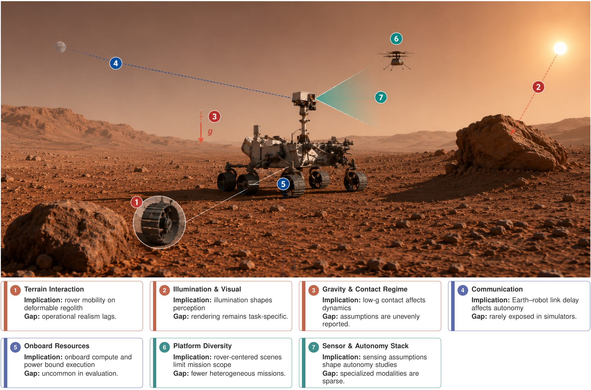

Openness & availability
Reported access to a work’s implementation, data, or public engine basis.
Accepted at iSpaRo 2026 IEEE International Conference on Space Robotics
1 Department of Robotics and Mechatronics Engineering
DGIST, Daegu, Republic of Korea
Planetary robotics is an important enabler of scientific exploration in environments where direct human-in-the-loop operation is costly, hazardous, or infeasible. However, developing and validating planetary robotic systems remains difficult because representative field testing is expensive, limited, and often unrepeatable under mission-relevant conditions. In this setting, simulation serves as a central tool for perception and autonomy research, synthetic data generation, system integration, and pre-deployment evaluation. Despite its importance, the literature on planetary robotics simulation remains dispersed across different simulation engines, implementations, and application settings. This paper surveys simulation works for planetary robotic perception and autonomy across four practical axes: Openness and Availability, Scenario and Platform Coverage, Sensor and Perception Support, and Environmental and Operational Realism. The surveyed simulation works report visual or physical fidelity and support perception-oriented workflows. They also indicate uneven public availability, rover-centered coverage, partial support for specialized sensing modalities, and limited treatment of operational constraints such as onboard computation, energy, and communication restrictions. Detailed selection criteria, the survey database, and resource links with verification dates are available on our project website at https://kimhoyun-robotair.github.io/Survey-For-Planetary-Robotic-Simulation/.

Figure 5. Mission-scene view of how environmental and operational realism factors appear in planetary simulation. The upper image provides the mission context, while the indexed blocks give an at-a-glance summary of the implication and reporting gap associated with each factor. The figure highlights that operational constraints such as communication delay, onboard computation, and energy budgets are reported less consistently than terrain, contact, illumination, or rendering assumptions.
Reproduced from the paper, p. 6. The Mars scene was generated using ChatGPT Image 2.0, as acknowledged in the paper. View full-size figure ↗
Baseline: the paper’s Table I, Sections III–V, and bibliography. Additional literature and current link checks are documented separately from the paper’s 22-work dataset.
A bounded set of simulation works for planetary surface and near-surface perception and autonomy.
These are the categories stated in Section III-A. They are not a reconstructed list of individual rejected papers.
Reported access to a work’s implementation, data, or public engine basis.
Target domains and the primary robot platform or task relevance.
Sensors, rendered observations, and outputs reported by each work.
Terrain, contact, and rendering assumptions alongside execution constraints.
The paper presents a bounded survey, not an exhaustive census. Percentages describe the selected works; they are not estimates of prevalence across the entire field. The years represented in Table I do not establish a literature-search cutoff date.
Missing historical records are left explicit. Dates, search procedures, and original exclusion reasons are not inferred from publication years or later checks.
Open a record for its profile, bibliographic source, resource links, and dated checks.
12 direct · 1 request · 9 without a listed release
16 rover-relevant · 3 construction · 2 aerial · 1 multi-platform
Profiles reproduce Table I; grouping follows Fig. 4. A resource’s current HTTP response does not change the paper’s access classification. The Chrono entry links to the public engine basis, as noted in its record.
Giubilato, Riccardo et al. · 2020 IEEE 7th International Workshop on Metrology for AeroSpace (MetroAeroSpace) · 2020
Evidence: Survey Table I, p. 4; bibliography reference [23]. Capabilities are transcribed from the survey, not independently benchmarked.
Müller, M. G. et al. · 2021 IEEE/RSJ International Conference on Intelligent Robots and Systems (IROS) · 2021
Evidence: Survey Table I, p. 4; bibliography reference [8]. Capabilities are transcribed from the survey, not independently benchmarked.
Zhou, Ruyi et al. · IEEE Transactions on Aerospace and Electronic Systems · 2023
The year follows Table I and the survey’s bibliography (2023). The DOI registry currently lists 2022.
Evidence: Survey Table I, p. 4; bibliography reference [24]. Capabilities are transcribed from the survey, not independently benchmarked.
Cloud, Joseph M. et al. · 2023 IEEE/RSJ International Conference on Intelligent Robots and Systems (IROS) · 2023
Evidence: Survey Table I, p. 4; bibliography reference [10]. Capabilities are transcribed from the survey, not independently benchmarked.
Pieczyński, Dominik et al. · Applied Sciences · 2023
Evidence: Survey Table I, p. 4; bibliography reference [13]. Capabilities are transcribed from the survey, not independently benchmarked.
Jiang, Yun et al. · 2023 IEEE 2nd Industrial Electronics Society Annual On-Line Conference (ONCON) · 2023
Evidence: Survey Table I, p. 4; bibliography reference [28]. Capabilities are transcribed from the survey, not independently benchmarked.
Bingham, Lee et al. · 2023 IEEE Aerospace Conference · 2023
Evidence: Survey Table I, p. 4; bibliography reference [16]. Capabilities are transcribed from the survey, not independently benchmarked.
Richard, Antoine et al. · 2024 IEEE International Conference on Robotics and Automation (ICRA) · 2024
Evidence: Survey Table I, p. 4; bibliography reference [9]. Capabilities are transcribed from the survey, not independently benchmarked.
Zhang, Guoxing and Li, Qiuping · 2024 IEEE Aerospace Conference · 2024
Evidence: Survey Table I, p. 4; bibliography reference [25]. Capabilities are transcribed from the survey, not independently benchmarked.
Mortensen, Anton Bjørndahl and Bøgh, Simon · 2024 International Conference on Space Robotics (iSpaRo) · 2024
Evidence: Survey Table I, p. 4; bibliography reference [20]. Capabilities are transcribed from the survey, not independently benchmarked.
Khunmaturod, Assawayut and Chang, Dong · 2024 9th International Conference on Automation, Control and Robotics Engineering (CACRE) · 2024
The conference name, omitted from the survey bibliography, was verified against the publisher’s bibliographic record.
Evidence: Survey Table I, p. 4; bibliography reference [17]. Capabilities are transcribed from the survey, not independently benchmarked.
Wan, Gang et al. · Venue not specified in the bibliography · 2024
Evidence: Survey Table I, p. 4; bibliography reference [29]. Capabilities are transcribed from the survey, not independently benchmarked.
Bhaskara, Ramchander et al. · 2024 IEEE Aerospace Conference · 2024
Evidence: Survey Table I, p. 4; bibliography reference [21]. Capabilities are transcribed from the survey, not independently benchmarked.
Batagoda, Nevindu M. et al. · 2025 IEEE Aerospace Conference · 2025
The linked repository is the public Chrono engine basis; it does not establish release of the study-specific experiments.
Evidence: Survey Table I, p. 4; bibliography reference [14]. Capabilities are transcribed from the survey, not independently benchmarked.
Jiao, Shuaifeng et al. · 2025 IEEE/RSJ International Conference on Intelligent Robots and Systems (IROS) · 2025
Evidence: Survey Table I, p. 4; bibliography reference [18]. Capabilities are transcribed from the survey, not independently benchmarked.
Mattias Linde et al. · arXiv:2505.22091 · 2025
Evidence: Survey Table I, p. 4; bibliography reference [15]. Capabilities are transcribed from the survey, not independently benchmarked.
Daniel Lindmark et al. · arXiv:2509.12367 · 2025
Evidence: Survey Table I, p. 4; bibliography reference [11]. Capabilities are transcribed from the survey, not independently benchmarked.
Marvin Chancán et al. · arXiv:2512.21438 · 2025
Evidence: Survey Table I, p. 4; bibliography reference [22]. Capabilities are transcribed from the survey, not independently benchmarked.
Dario Pisanti and Georgios Georgakis · arXiv:2605.29647 · 2026
Evidence: Survey Table I, p. 4; bibliography reference [26]. Capabilities are transcribed from the survey, not independently benchmarked.
Chen, Bo-Hsun et al. · IEEE Aerospace and Electronic Systems Magazine · 2026
Evidence: Survey Table I, p. 4; bibliography reference [12]. Capabilities are transcribed from the survey, not independently benchmarked.
Umut Kurt et al. · Workshop on Intelligent Space Robotics and Systems · 2026
The scholarly-source link was located in the ICRA 2026 Space Robotics Workshop program during the companion review. The paper’s study-artifact access classification is preserved.
Evidence: Survey Table I, p. 4; bibliography reference [19]. Capabilities are transcribed from the survey, not independently benchmarked.
No works match these filters. Try another term or reset the filters.
Not reported means the paper does not list the field, not that a capability is absent. Reported support refers to functionality described by the work, rather than hypothetical engine features. A public repository is not a guarantee that all study-specific assets or experiments are released.
Rover-relevant in the distribution includes rovers and terrain, stereo/depth, or planning inputs useful to rover autonomy. Each work is counted once under its primary category. Cross-domain is a navigation group for planetary-generic and combined lunar/Mars entries.
Abbreviations: R1/R2 = ROS 1/ROS 2; St = stereo; Sem = semantic; Seg = segmentation; Enc = wheel encoder; Alt = altimeter; Inc = inclinometer; DEM = digital elevation model; LDEM = lunar DEM; proc. = procedural; synth. = synthetic; Exc./Truck = excavator/truck.
Related literature that is not part of the paper’s 22-work comparison. These records do not contribute to the totals above.
The paper identifies some studies as related work outside the core set. Other relevant frameworks can be documented here without retrospectively changing the accepted paper’s dataset. A present-day scope assessment is kept separate from an original exclusion decision.
Each check records what could be established at the time it was made.
Work profiles and paper classifications come from Table I and the surrounding discussion. Bibliographic details follow the paper’s references and are checked against publication sources. Supplementary scholarly links and venue details are identified in the relevant records. Source and artifact links are shown separately in every record.
SRB’s scope note uses its own paper, specifically Sections III-C, III-D and IV. The other additional-work notes follow the survey’s Section III-E. No original rejection rationale is claimed where one was not recorded.
Checks use unauthenticated HTTP requests. “HTTP reachable” records an HTTP 200 response with page content; it does not verify all content, licensing, installation, simulation fidelity, or reproducibility.
Access restrictions, unconfirmed responses, missing pages, and request failures are reported separately. A failed or unconfirmed attempt receives a check date, but no new confirmed-reachable date. It does not prove that a resource is unavailable to every reader.
39 links checked
2 access restricted
21 http reachable
16 response unconfirmed
| Resource | Checked | Result | Confirmed reachable |
|---|---|---|---|
| https://arxiv.org/abs/2408.13468 | HTTP reachable · HTTP 200 | 2026-09-11 | |
| https://arxiv.org/abs/2505.22091 | HTTP reachable · HTTP 200 | 2026-09-11 | |
| https://arxiv.org/abs/2509.12367 | HTTP reachable · HTTP 200 | 2026-09-11 | |
| https://arxiv.org/abs/2509.23328 | HTTP reachable · HTTP 200 | 2026-09-11 | |
| https://arxiv.org/abs/2512.21438 | HTTP reachable · HTTP 200 | 2026-09-11 | |
| https://arxiv.org/abs/2605.29647 | HTTP reachable · HTTP 200 | 2026-09-11 | |
| https://doi.org/10.1109/AERO47225.2020.9172345 | Response unconfirmed · HTTP 202 | Not confirmed | |
| https://doi.org/10.1109/AERO55745.2023.10115607 | Response unconfirmed · HTTP 202 | Not confirmed | |
| https://doi.org/10.1109/AERO58975.2024.10521330 | Response unconfirmed · HTTP 202 | Not confirmed | |
| https://doi.org/10.1109/AERO63441.2025.11068496 | Response unconfirmed · HTTP 202 | Not confirmed | |
| https://doi.org/10.1109/CACRE62362.2024.10634867 | Response unconfirmed · HTTP 202 | Not confirmed | |
| https://doi.org/10.1109/ICRA57147.2024.10610026 | Response unconfirmed · HTTP 202 | Not confirmed | |
| https://doi.org/10.1109/IROS51168.2021.9636644 | Response unconfirmed · HTTP 202 | Not confirmed | |
| https://doi.org/10.1109/IROS55552.2023.10342005 | Response unconfirmed · HTTP 202 | Not confirmed | |
| https://doi.org/10.1109/IROS60139.2025.11246916 | Response unconfirmed · HTTP 202 | Not confirmed | |
| https://doi.org/10.1109/MAES.2025.3617426 | Response unconfirmed · HTTP 202 | Not confirmed | |
| https://doi.org/10.1109/MetroAeroSpace48742.2020.9160154 | Response unconfirmed · HTTP 202 | Not confirmed | |
| https://doi.org/10.1109/ONCON60463.2023.10431105 | Response unconfirmed · HTTP 202 | Not confirmed | |
| https://doi.org/10.1109/TAES.2022.3207705 | Response unconfirmed · HTTP 202 | Not confirmed | |
| https://doi.org/10.1109/aero58975.2024.10521439 | Response unconfirmed · HTTP 202 | Not confirmed | |
| https://doi.org/10.1109/iSpaRo60631.2024.10687686 | Response unconfirmed · HTTP 202 | Not confirmed | |
| https://doi.org/10.1109/iSpaRo66239.2025.11436587 | Response unconfirmed · HTTP 202 | Not confirmed | |
| https://doi.org/10.21203/rs.3.rs-4851864/v1 | HTTP reachable · HTTP 200 | 2026-09-11 | |
| https://doi.org/10.3390/app132212401 | Access restricted · HTTP 403 | Not confirmed | |
| https://github.com/AndrejOrsula/space_robotics_bench | HTTP reachable · HTTP 200 | 2026-09-11 | |
| https://github.com/DLR-RM/oaisys | HTTP reachable · HTTP 200 | 2026-09-11 | |
| https://github.com/MorpheusPD/MarsSim | HTTP reachable · HTTP 200 | 2026-09-11 | |
| https://github.com/OmniLRS/OmniLRS | HTTP reachable · HTTP 200 | 2026-09-11 | |
| https://github.com/PUTvision/LunarSim | HTTP reachable · HTTP 200 | 2026-09-11 | |
| https://github.com/abmoRobotics/RLRoverLab | HTTP reachable · HTTP 200 | 2026-09-11 | |
| https://github.com/assawayut/LunarRoverSim | HTTP reachable · HTTP 200 | 2026-09-11 | |
| https://github.com/mchancan/PlanetaryPathBench | HTTP reachable · HTTP 200 | 2026-09-11 | |
| https://github.com/nasa-jpl/guiss | HTTP reachable · HTTP 200 | 2026-09-11 | |
| https://github.com/nasa-jpl/martian | HTTP reachable · HTTP 200 | 2026-09-11 | |
| https://github.com/nubot-nudt/LuSeg | HTTP reachable · HTTP 200 | 2026-09-11 | |
| https://github.com/projectchrono/chrono | HTTP reachable · HTTP 200 | 2026-09-11 | |
| https://github.com/uwsbel/POLAR-Sim | HTTP reachable · HTTP 200 | 2026-09-11 | |
| https://software.nasa.gov/software/MSC-27522-1 | HTTP reachable · HTTP 200 | 2026-09-11 | |
| https://openreview.net/pdf?id=YdtCNcDCIV | Access restricted · HTTP 403 | Not confirmed |
— All 22 records checked against Table I and the paper’s bibliography, with publication sources and resource links reviewed. Related literature remains separate from the paper’s comparison. Historical search and screening records remain unspecified where the paper does not provide them.